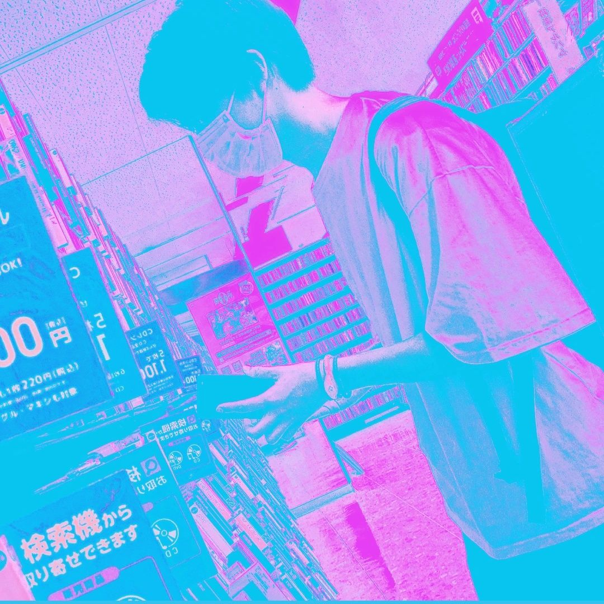

PORTFOLIO
Graffiti Xity EP
使用ソフト / 音楽:FL studio / ジャケット:blender. medibang paint / XFD:blender. aviutl
香港にかつて存在したスラム街"九龍城砦"の存在を知り、影響を受けて作った作品。人口増加により違法建築が無造作に積み上げられ、その後誰もいなくなった街を想像し、そこに存在する物から感じる哀愁をイメージして制作した。誰もいなくても残る誰かがいたことの痕跡でもあるグラフィティに強く惹かれ、作品に組み込んだ。blenderを用いて建物の大枠を作り、その上からペイントを重ねていき、イラストを作成した。

Graffiti Xity
size- 3000x3000px
material- blender medibang paint
laundromat EP
使用ソフト / 音楽:FL studio / ジャケット:clip studio paint / XFD:blender. adobe premiere pro. after effects
インターネット音楽と生活をテーマに作成したミニアルバム。家ではないのにもっとも生活感を感じられるコインランドリーをテーマに、情報過多のインターネットの世界の明るい面を様々な音楽ジャンルを複合した楽曲6曲に表現した。
laundromat
このアルバムの主題曲である「laundromat」は洗濯物が洗濯機の中で混ぜられて一つのものに見えるところから着想を得ました。洗濯物に見立てた別々の刻まれたサンプルが徐々に細かくなっていき、一体化することで見せる流体的な音の変化を表現しています。少し複雑なドラムに、自分の手で切り刻んだ音をグラニュラーというエフェクトにかけてより細かくし液体のようなサウンドをのせて、流れるようなリズムを体現しています。